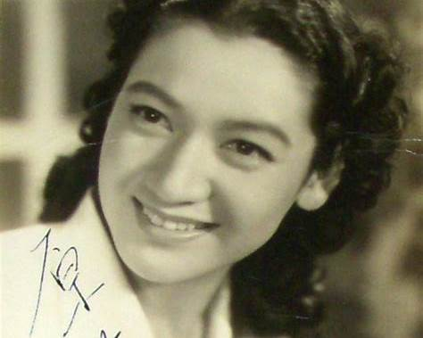

予想芸能人

原節子 * 1920年生まれ。出身は現在の横浜市保土ケ谷区。
* 1935年にデビュー、1950〜60年代にかけて日本映画を代表する女優として活躍。
* 1962年の作品を最後に引退したが、1960年代の映画界では大きな存在だった。

黒沢年男 * 1944年生まれ、横浜出身。
* 1964年から映画俳優としてデビューし、1960年代後半から活躍。
1. 横浜の盛り上がれるイベント
2. 横浜を昔と今で比較してみて
3. 失って悲しいイベントは？
4. 新しくできて嬉しいイベントは？
5. 横浜出身の芸能人誰知っている？
6. 横浜のおすすめのデートスポットを今と昔で
7. 横浜で流行ったグルメ
8. 横浜のおみやげおしえて
9. 他県から旅行目的でくるとしたらどこいくべき
10. 横浜の人しか伝わらないお話
11. 横浜で住みやすい場所（学生）
12. 横浜で住みやすい場所（新卒）
13. ぶっちゃけ一番のスーパーは
14. 近づいてはいけない心霊スポット的な
15. 会ったことのある芸能人
原節子 * 1920年生まれ。出身は現在の横浜市保土ケ谷区。
* 1935年にデビュー、1950〜60年代にかけて日本映画を代表する女優として活躍。
* 1962年の作品を最後に引退したが、1960年代の映画界では大きな存在だった。
黒沢年男 * 1944年生まれ、横浜出身。
* 1964年から映画俳優としてデビューし、1960年代後半から活躍。
米兵たちはスパゲッティにケチャップをかけて食べていたようです。この食事風景が、後のナポリタン考案のヒントとなりました。
港町である横浜は、開港以来、新しい海外の文化や食材を受け入れ、日本の文化として昇華させる土壌がありました。
* 港町・横浜らしい「船」「港」イメージのお菓子で、昔から横浜銘菓のひとつとして知られてきた。
* 洋菓子文化と和の味の融合が、昭和〜高度経済成長期の港町・横浜らしい“おしゃれなお土産”感。
* 港町の近代文化とはまた違って、日本の伝統的な庭園・建築を落ち着いて楽しめる場所。季節ごとに風景が変わって、春の桜、秋の紅葉などがきれい。
* 忙しい観光とは違って、ゆっくり静かに「和」の時間を過ごしたい人にピッタリ。